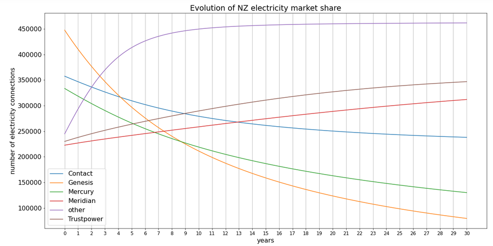

Lotka-Volterra for the NZ Electricity Market¶
The competitive Lotka-Volterra equations model population dynamics of species competing for a common resource. Here the model is applied to the NZ electricity market assuming that each population consists of the number of electricity connections (individuals) for a given retailer (species) competing for the same pool of customers (the common resource). Note that losing or gaining a customer can impact more than one individual electricity connection.
In this model, species have an intrinsic growth rate and their competitors have a strictly negative impact. It is assumed that population growth follows a logistic growth curve and so a carrying capacity is incorporated. This is in contrast to the more widely known Lotka-Volterra or predator-prey equations which assume populations have exponential growth.
I’ve used to Python 3.6.4 to implement the model in Jupyter notebook.
The Lotka-Volterra system¶
The species growth (decay) equation for each of the \(n\) species is:
Where \(x_i\) is the size of the \(i^{th}\) population, \(r_i\) its intrinsic growth rate and
\(K_i\) its carrying capacity. The \(a_{ij}\)
are the interactions between different species.
Since \(a_{ij}>0 ~for~all~ 1 \neq i,j \neq n\) each species also competes with itself. In this example we can consider that once nearing carrying capacity, the existing connections will reduce the ability to grow further due to market constraints.
We assume \(r_i>0\) and so in the absence of any competition we have:
Therefore, the population will either remain at zero or stabilise at its carrying capacity \(K_i\) where \(aii=1\).
I want to to calculate and graph population sizes over time. In order to do this I’ll use the Runge-Kutta method (RK4), to solve it numerically.
To simplify the carrying capacity calculation, I have assumed that the carrying capacity of each retailer is a third of the current market capacity. This allows for all of the retailers to continue to grow which will no doubt happen with ongoing population growth in NZ and also assumes that the electricity regulator is unlikely to allow any one retailer to get too large. However, it doesn’t take into account the limits of individual retailers to grow - if they don’t have the resources or capital to grow the carrying capacity will be lower nor does it take into account actual customer base growth. To improve the model, more research needs to be done on the market and individual retailers. Ideally it would evolve over time to better match reality.
System parameters¶
The major electricity retailers in NZ are, in size order, Genesis Energy, Contact Energy, Mercury NZ, Meridian Energy and Trustpower. The other retailers I have grouped together as ‘other’. I have sourced market share data (the number of electricity connections) from the Electricity Authority’s (EA) Market share snapshot. While data on the gains and losses of connections comes from the Switching summary also published by the EA.
To calculate growth rates, \(r_i\), I’ve calculated average monthly growth over the first half of 2019. Then I’ve solved a compounding interest formula to calculate the daily growth rates.
For the interactions, \(a_{ij}\) where \(i \neq j\), I’ve calculated the average monthly losses for the first half of 2019 for retailer \(i\). I’ve attributed the losses evenly (since I don’t know who they’re being lost to) across the \((n-1)\) competitors and then calculated loss rates, \(l_{ij}\), relative to the average number of connections of the \(j^{th}\) competitor over the same period. Since the model applies competitor interactions relative to population growth, \(r_i\), I’ve adjusted the losses by the populations growth rate so \(a_{ij} = \frac{l_{ij}}{r_i}\). Otherwise we see that the interactions, \(a_{ij}\), are so small that they barely impact the model and all populations tend toward their carrying capacity. Then I’ve again translated that into a daily rate.
Python Code¶
Import the libraries needed:
import pandas as pd
import numpy as np
import matplotlib.pyplot as plt
Next, define the methods to be used starting with the competitive Lotka-Volterra equation. Note that ‘r’ and ‘x’ are vectors and ‘a’ is a matrix of the interactions. This avoids having to use a loop to sum each interaction. Note that the carrying capacities are accounted for in the interaction matrix ‘a’ to simplify the calculations and so the \(K_i\) are not explicitly defined.
# Define the competitive Lotka-Volterra equation
def CLV(i, r, x, a):
# i = ith population
# r = vector of intrinsic growth (decay) rates
# x = vector of population sizes
# a = interaction matrix
return x[i] * r[i] * (1 - sum(x*a[i]))
Next we define the Runge-Kutta method (RK4). Note that the notation x0 and t0 do not related to the starting points of the whole model but starting points for the particular RK4 iteration.
# Define the Runge-Kutta method for calculating the population after t0 + delta
def RK4(delta, r, x0, a):
# i = ith population
# r = vector of intrinsic growth rates
# x0 = vector of population sizes at time t0
# a = interaction matrix
n=len(r) # number of populations in competition
# initialise the ki which hold each incremental value
k1=np.zeros(n)
k2=np.zeros(n)
k3=np.zeros(n)
k4=np.zeros(n)
for i in range(0,n):
# for each population calculate the value at increment k1
k1[i]= delta * CLV(i, r, x0, a)
x1= x0+k1/2 # population value to feed into next step
for i in range(0,n):
# for each population calculate the value at increment k2
k2[i]= delta * CLV(i, r, x1, a)
x2= x0+k2/2 # population value to feed into next step
for i in range(0,n):
# for each population calculate the value at increment k3
k3[i]= delta * CLV(i, r, x2, a)
x3= x0+k3 # population value to feed into next step
for i in range(0,n):
# for each population calculate the value at increment k4
k4[i]= delta * CLV(i, r, x3, a)
return x0 + (k1 + 2*k2 + 2*k3 + k4)/6 #values at time t + delta
Then set up the population parameters. Note that the last two columns of the interactions matrix are nearly identical because Trustpower and ‘other’ had just about the same average number of connections for the first half of 2019.
# Population parameters
# List of retailers corresponding to each i
retailers = [ 'Contact','Genesis', 'Mercury', 'Meridian', 'other', 'Trustpower']
# Electricity connections per retailer as at 30 June 2018
x0= [357574, 447637, 333568, 222683, 244903, 230072] #starting values
# Intrinsic growth rates
r= np.array([0.000510837, 0.000313337, 0.000325357, 0.000327255, 0.001858452, 0.000570492])
# Assumed carrying capacities
k=sum(x0)/3
# Interaction matrix
a = np.array([ [ 1.0000, 0.1581 ,0.2089, 0.3191 , 0.3020, 0.3075 ],
[0.3571, 1.0000 ,0.3740 , 0.5713 , 0.5407 , 0.5506],
[0.2884, 0.2287 ,1.0000 , 0.4615 , 0.4368 , 0.4448],
[0.1601 , 0.1270, 0.1678 , 1.0000 , 0.2426 , 0.2471],
[0.1021 , 0.0810 , 0.1069 , 0.1633, 1.0000 , 0.1573],
[0.1551 ,0.1230, 0.1625 , 0.2483, 0.2350 , 1.0000] ])
# Incorporate the carrying capacities into the interactions matrix
a=a/k
Followed by the time parameters. I’m running the model over 30 years.
# Time period parameters
delta = 1 # step size of 1 day
N=30 * 365 # number of iterations corresponding to 30 years
# Initialise the matrix holding the population sizes at each step
X=np.vstack((x0, np.zeros((N-1,6))))
The model is then applied using the Runge-Kutta method storing each days population sizes in the matrix ‘X’.
# Calculate the population sizes
for n in range(1, N):
X[n] = RK4(delta, r, X[n-1], a)
Lastly the results are graphed.
#Plot the populations over time
# Plot parameters
fig = plt.figure(figsize=(20,10))
plt.rcParams.update({'font.size': 16})
# Plot the data
h = plt.plot(range(0,N),X)
# Set the ticks and labels
ticks = np.arange(0, N+1, 365)
labels = range(ticks.size)
plt.xticks(ticks, labels, fontsize=12)
# Add vertical lines
plt.gca().xaxis.grid(True)
# Add title and labels
plt.title('Evolution of the NZ electricity market')
plt.xlabel('years')
plt.ylabel('number of electricity connections')
# Add legend
plt.legend(h, retailers)
plt.show()
As you will see below, the ‘other’ grouping grows dramatically while the other retailers grow or decline more gradually. This is due to ‘other’ having a much higher intrinsic growth rate of 0.1654% daily or 82% per annum (versus Contact’s annual rate of 11%). In reality an annual rate of 82% rate would actually decrease over time as this rapid growth, due to more recent market entry, is not sustainable. However, it makes for an interesting graph.
We see ‘other’ being impacted by the underlying logistic growth model as the population very gradually approaches its carrying capacity in year 15. This is also unrealistic since this is a group of several smaller electricity retailers so they would not be bounded by the 33% market share assumption.
Genesis and Mercury are hit hard by the growth of ‘other’ and this trend continues. Contact is also negatively affected but their population stabilises around 300K while it looks like Genesis is going for broke. Meanwhile Meridian and Trustpower increase in market share with Truspower overtaking Meridian in year 9.
Although it is unlikely that this will be the trajectory of the market over the next 30 years, this graph allows us to analyse the impact of competitors on each other and we can deduce that Genesis is likely to be hardest hit by the growth of the new market entrants. In reality, Genesis and Mercury would change strategy in order to reverse these trends.
{kind=link}
In conclusion, it has been an interesting project to apply the competitive Lotka-Volterra equations to the NZ electricity market. As mentioned, the parameters are not particularly accurate and so it would be interesting to do some market research to more accurately set the modelling parameters and then analyse the impact of changes in these parameters on the market.